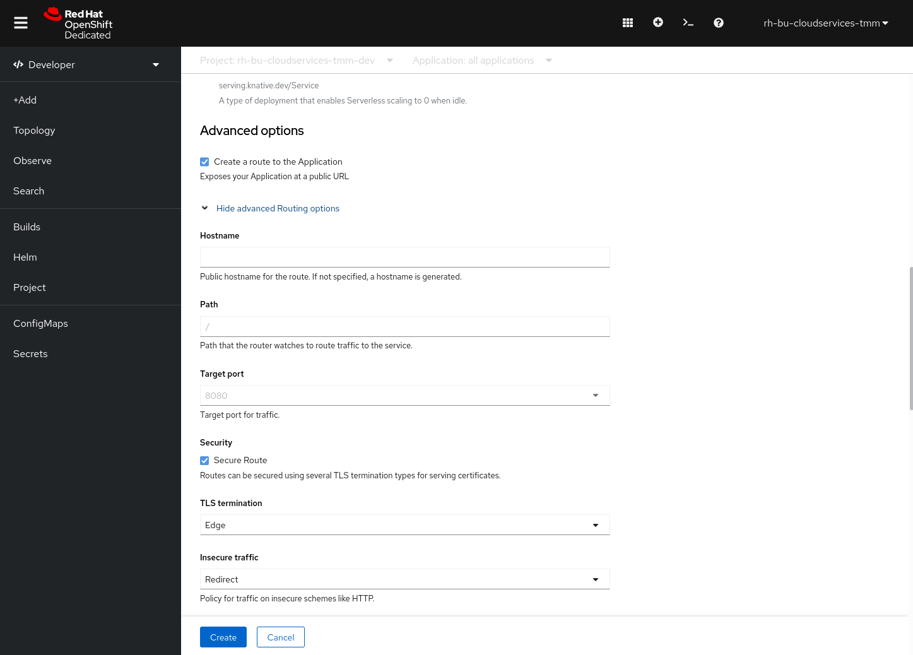
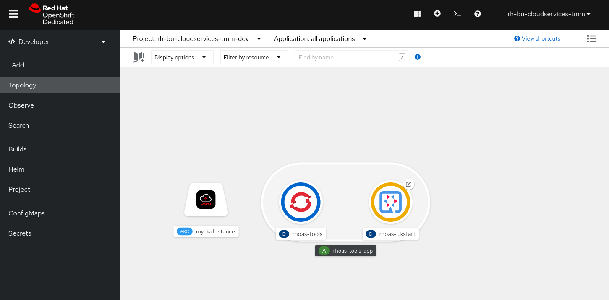
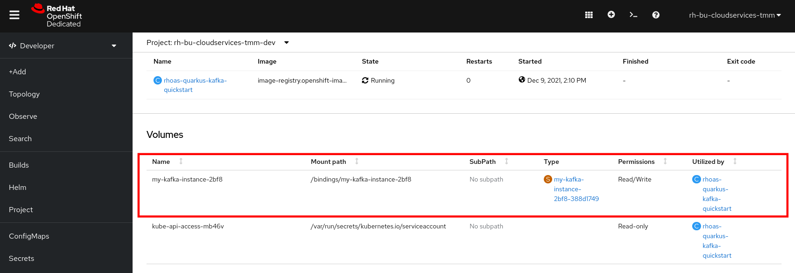

Binding a Quarkus application to OpenShift Streams for Apache Kafka
As a developer of applications and services, you can connect Quarkus applications to Kafka instances in OpenShift Streams for Apache Kafka.
Quarkus is a Kubernetes-native Java framework made for Java virtual machines (JVMs) and native compilation, and optimized for serverless, cloud, and Kubernetes environments. Quarkus is designed to work with popular Java standards, frameworks, and libraries like Eclipse MicroProfile and Spring, as well as Apache Kafka, RESTEasy (JAX-RS), Hibernate ORM (JPA), Infinispan, Camel, and many more.
You can bind a Quarkus application to your Kafka instance using Kubernetes Service Binding. Service Binding allows you to communicate connection details and secrets to an application to allow it to bind to a service. In this context, a service can be anything: a Kafka instance, a NoSQL database, etc. By using Service Binding, we no longer need to configure connection details (host, port), authentication mechanisms (SASL, OAuth) and credentials (username/password, client id/client secret) in an application. Instead, Service Binding injects these variables into your application container (as files or environment variables) for your application to consume. The Quarkus Kubernetes Service Binding extension enables Quarkus applications to automatically pickup these variables, injected as files, from the container’s filesystem, removing the need to specify any configuration settings in the application resources (e.g configuration files) themselves.
Deploying a Quarkus application
As the first task, you will deploy a Quarkus application that produces to, and consumes from, a Kafka instance. It’s an adapted version of the standard Quarkus Kafka Quick Start, to which the Quarkus Kubernetes Service Binding plugin has been added.
The Quick Start is a PriceConverter application that generates random prices (integers) and sends them to a Kafka topic. Another component of the application consumes these prices, applies a conversion and makes them available via a REST service endpoint. The output can be inspected on a simple webpage.
The source code of the Quarkus application can be found in this GitHub repo.
We’ve pre-build the container image with the Quarkus application so that you can deploy it in your OpenShift project on the Developer Sandbox.
To deploy the Quarkus application:
-
Make sure you are in the Developer Perspective of your sandbox environment.
-
In the navigation menu on the left, click +Add.
-
Make sure that your OpenShift Project, which you can see at the top of the Add window, is set to
{username}-dev(where{username}is your username in the sandbox OpenShift environment). -
Click on the Container Images card.
-
In the Image name from external registry field, enter:
quay.io/rhoas/rhoas-quarkus-kafka-quickstart -
In the Runtime icon field, select
quarkus. -
Under the Advanced options, click the Show advanced Routing options link to show the advanced configuration options.
Check the Secure Route checkbox.
Set the TLS termination field toEdge.
Set the Insecure traffic field toRedirect. -
Leave the other fields set to their default values and click the Create button. This will create a new OpenShift Deployment for your Quarkus application.
-
You will see the deployment of your Quarkus application in the Topology screen.
The icon of your Quarkus application should have a yellow circle around it, indicating that the application is misconfigured and failing to enter a healthy state. -
Click on the icon of your Quarkus application. This will open a panel on the right-hand-side of your screen. Click on the Resources tab. You will see the Pods of your Deployment. Currently you only have a single pod.
-
Click on the View logs link next to the pod. In the logs of your application, you will see an error stating the application is misconfigured and is missing configuration properties to be able to connect to Kafka.
Dec 09, 2021 11:23:36 AM org.jboss.threads INFO: JBoss Threads version %s Dec 09, 2021 11:23:36 AM io.quarkus.runtime.ApplicationLifecycleManager run ERROR: Failed to start application (with profile prod) java.lang.IllegalStateException: The property 'kafka.bootstrap.servers' must be set when 'quarkus.kubernetes-service-binding.enabled' has been set to 'true' at io.quarkus.kafka.client.runtime.KafkaRecorder.checkBoostrapServers(KafkaRecorder.java:85) at io.quarkus.deployment.steps.KafkaProcessor$checkBoostrapServers-1072202763.deploy_0(KafkaProcessor$checkBoostrapServers-1072202763.zig:67) at io.quarkus.deployment.steps.KafkaProcessor$checkBoostrapServers-1072202763.deploy(KafkaProcessor$checkBoostrapServers-1072202763.zig:40) at io.quarkus.runner.ApplicationImpl.doStart(ApplicationImpl.zig:524) at io.quarkus.runtime.Application.start(Application.java:101) at io.quarkus.runtime.ApplicationLifecycleManager.run(ApplicationLifecycleManager.java:101) at io.quarkus.runtime.Quarkus.run(Quarkus.java:66) at io.quarkus.runtime.Quarkus.run(Quarkus.java:42) at io.quarkus.runtime.Quarkus.run(Quarkus.java:119) at io.quarkus.runner.GeneratedMain.main(GeneratedMain.zig:29) at java.base/jdk.internal.reflect.NativeMethodAccessorImpl.invoke0(Native Method) at java.base/jdk.internal.reflect.NativeMethodAccessorImpl.invoke(NativeMethodAccessorImpl.java:62) at java.base/jdk.internal.reflect.DelegatingMethodAccessorImpl.invoke(DelegatingMethodAccessorImpl.java:43) at java.base/java.lang.reflect.Method.invoke(Method.java:566) at io.quarkus.bootstrap.runner.QuarkusEntryPoint.doRun(QuarkusEntryPoint.java:48) at io.quarkus.bootstrap.runner.QuarkusEntryPoint.main(QuarkusEntryPoint.java:25)
Creating a Kafka topic for your Quarkus application
The Quarkus application is configured to produce to, and consume from a topic named prices. You therefore need to create this topic in Streams for Apache Kafka.
-
In the Kafka Instances page of the Streams for Apache Kafka web console, click the name of the Kafka instance that you want to add a topic to.
-
Select the Topics tab, click Create topic, and follow the guided steps to define the topic details. Click Next to complete each step and click Finish to complete the setup.
-
Topic name:
prices -
Partitions: 1
-
Message retention: Keep the default values.
-
Replicas: Replicas configuration is by default configured as 3 replicas and 2 min in-sync-replicas.
-
-
After you complete the topic setup, the new Kafka topic is listed in the topics table. Your Quarkus application can now start producing and consuming messages to and from this topic.
Install the tools image on Developer Sandbox
You installed the tools image on the Developer Sandbox as part of the previous chapter of this tutorial. If you skipped the previous chapter, refer to the Install the tools image on Developer Sandbox section for instructions.
Make sure that the rhoas and oc CLI clients inside the tools image are properly configured. If you executed the tasks in the previous chapter of this tutorial this should be the case. If needed, refer to Connect the OpenShift Streams for Apache Kafka instance to your OpenShift project for details and instructions.
-
You can verify that the
ocCLI client is properly configured with the following command:oc get deploymentThis should return the deployment status of the Quarkus application and the tools container:
NAME READY UP-TO-DATE AVAILABLE AGE rhoas-quarkus-kafka-quickstart 0/1 1 0 3m rhoas-tools 1/1 1 1 19m
Binding your Quarkus application to Streams for Apache Kafka
With your Quarkus application deployed, and your Streams for Apache Kafka instance connected to your OpenShift project, you can now bind your application to your Kafka instance. This is done using the Service Binding Operator, which will inject the configuration values required to connect to your Kafka instance into your Quarkus application. The Quarkus application has been configured to use the quarkus-kubernetes-service-binding extension enabling auto-discovery of the binding files injected into the Quarkus application pod.
We will create the binding using the rhoas CLI tool. You can also to do this directly from the OpenShift Developer Console.
To create the binding, you use the rhoas cluster bind command, and select the application deployment that we want to bind to our Streams for Apache Kafka instance that has already been connected to our OpenShift project.
-
On the command line in the terminal of the tools pod, execute the command:
rhoas cluster bind -
You are asked to select the application you want to connect to. Select rhoas-quarkus-kafka-quickstart amd press
enter.Namespace not provided. Using rh-bu-cloudservices-tmm-dev namespace Looking for Deployment resources. Use --deployment-config flag to look for deployment configs ? Please select application you want to connect with [Use arrows to move, type to filter] > rhoas-quarkus-kafka-quickstart rhoas-tools -
You are asked to select the type of service you want to connect. Select kafka and press
enter.Namespace not provided. Using rh-bu-cloudservices-tmm-dev namespace Looking for Deployment resources. Use --deployment-config flag to look for deployment configs ? Please select application you want to connect with rhoas-quarkus-kafka-quickstart ? Select type of service [Use arrows to move, type to filter] > kafka service-registry -
You are asked to select the Kafka instance you want to connect. Since you only have a single Kafka instance on OpenShift Streams for Apache Kafka, simply press
enterto continue.Namespace not provided. Using rh-bu-cloudservices-tmm-dev namespace Looking for Deployment resources. Use --deployment-config flag to look for deployment configs ? Please select application you want to connect with rhoas-quarkus-kafka-quickstart ? Select type of service kafka ? Select Kafka instance: [Use arrows to move, type to filter] > my-kafka-instance -
The CLI asks you to confirm. Type
yand pressenterto continue.Namespace not provided. Using rh-bu-cloudservices-tmm-dev namespace Looking for Deployment resources. Use --deployment-config flag to look for deployment configs ? Please select application you want to connect with rhoas-quarkus-kafka-quickstart ? Select type of service kafka ? Select Kafka instance: my-kafka-instance Binding "my-kafka-instance" with "rhoas-quarkus-kafka-quickstart" app ? Do you want to continue? (y/N)The CLI produces the following output:
Using ServiceBinding Operator to perform binding ✔️ Binding my-kafka-instance with rhoas-quarkus-kafka-quickstart app succeeded -
The binding will mount the Kafka connection configuration as files into the Quarkus application pod, from where they will be automatically picked up by the
quarkus-kubernetes-service-bindingextension.
With the binding created, your Quarkus application will now redeploy. Go back to the topology view screen by clicking on the Topology link in the navigation menu. -
Click on the Open URL icon in the upper-right of your Quarkus application icon in the Topology view. This opens a new browser tab showing the default Quarkus welcome page.
-
Add the path
/prices.htmlto the URL of your Quarkus application. This will open the prices page of your Quarkus application. The application has now been properly configured, and prices are being sent to and consumed from the Kafka topic. -
Go back to the Topology screen, click on the Quarkus application. This will open a panel on the righ-hand-side of your screen. Click on the Resources tab. You will see the Pod of your Deployment. Click on the View logs link next to your pod. In the logs of your application, you will see that your Quarkus application has connected to Kafka.
-
In the same screen, click on the Details tab. Scroll down until you see the Volumes section. Note that there is a kafka-binding volume, which contains the binding files that contain the information required by your Quarkus application to connect to your Kafka instance. These files are auto-discovered and used by the
quarkus-kubernetes-service-bindingextension to automatically connect your Quarkus application to OpenShift Streams for Apache Kafka.
You have succesfully connected a Quarkus application to a Kafka instance of OpenShift Streams for Apache Kafka using Servie Binding.